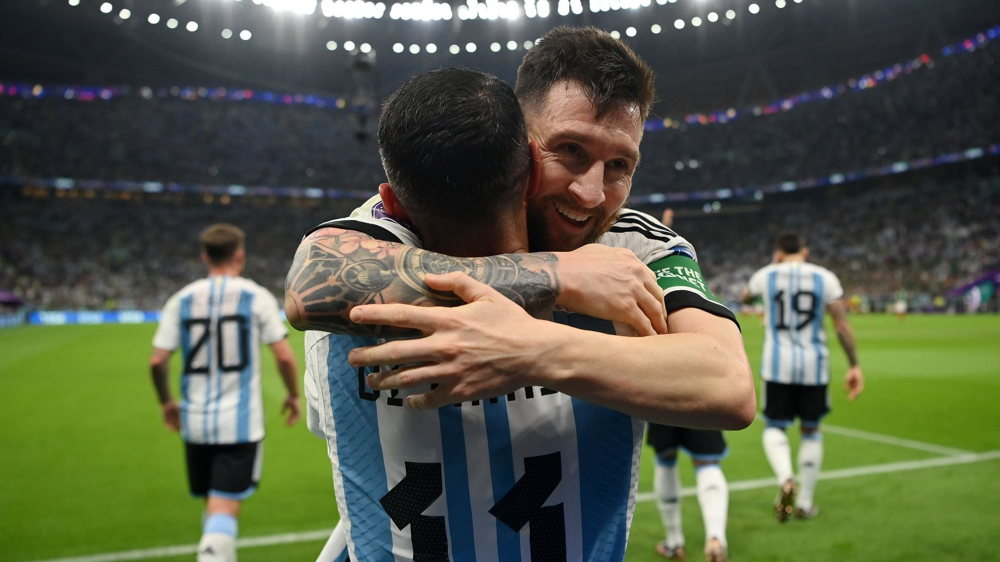
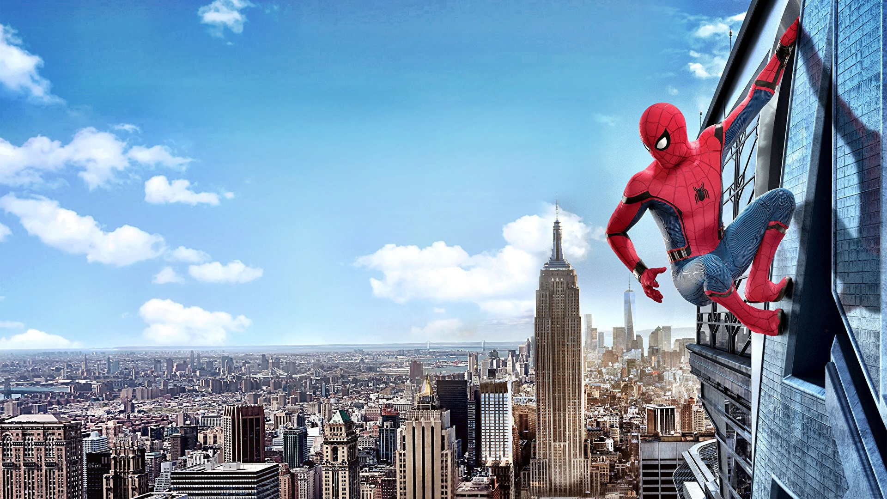
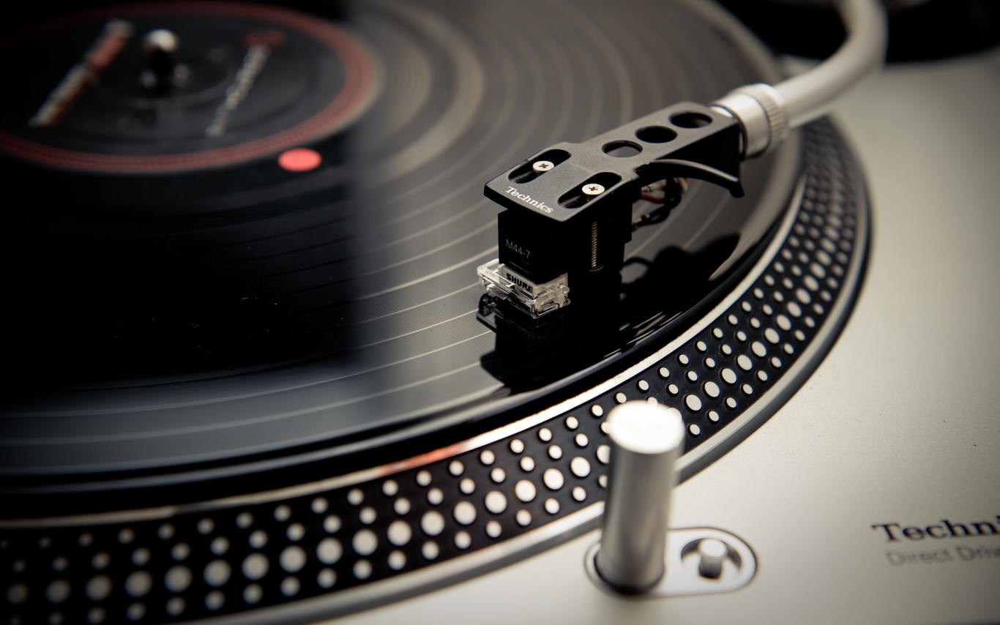
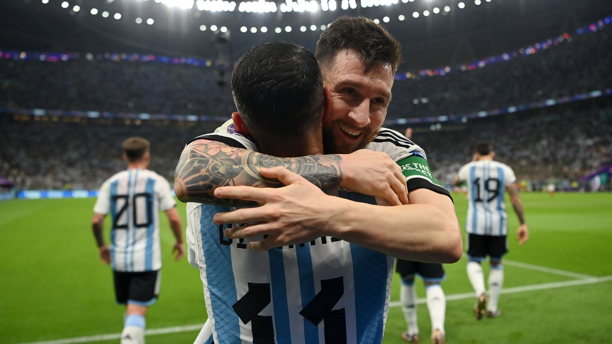
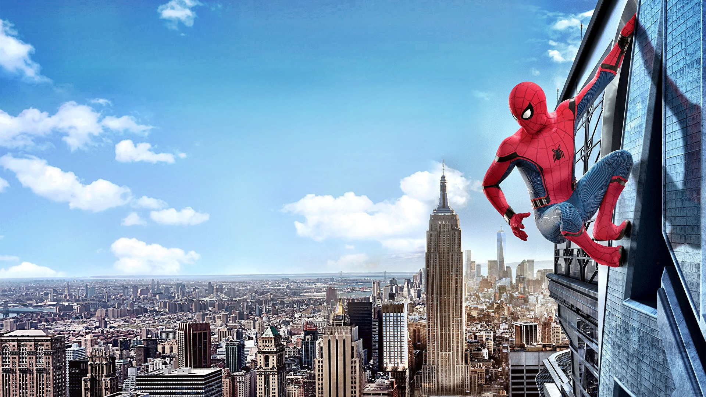
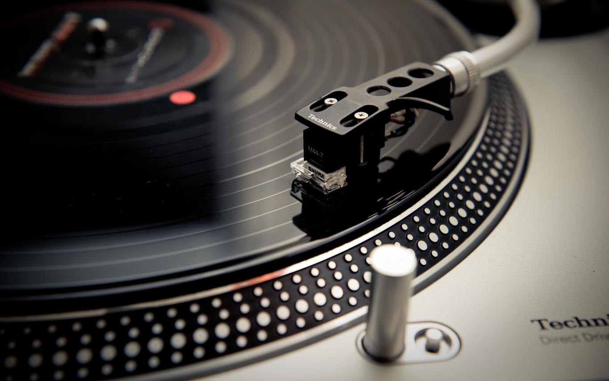

Mundial de Fútbol 2022: Una Copa para la Historia
"Revive los momentos más emocionantes del Mundial de Catar 2022, con sorpresas, récords y el épico triunfo que quedará grabado en la memoria del fútbol."
Leer más 





"Revive los momentos más emocionantes del Mundial de Catar 2022, con sorpresas, récords y el épico triunfo que quedará grabado en la memoria del fútbol."
Leer más"Descubre cómo dos de las bandas más icónicas, conquistaron a sus fans con espectáculos inolvidables en sus giras recientes."
Leer más"La magia del sonido retro vuelve a ser protagonista. Los vinilos resurgen como un ícono de nostalgia y calidad en el mundo de la música."
Leer más